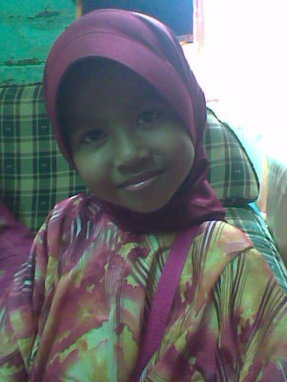
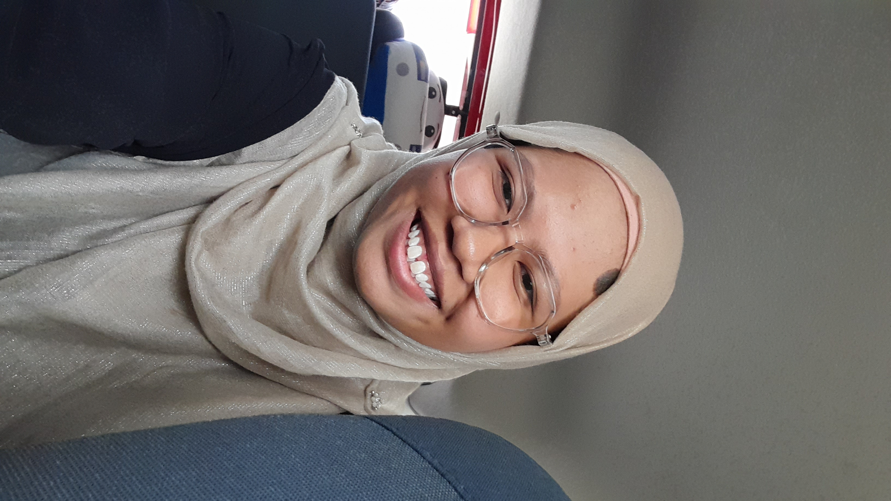
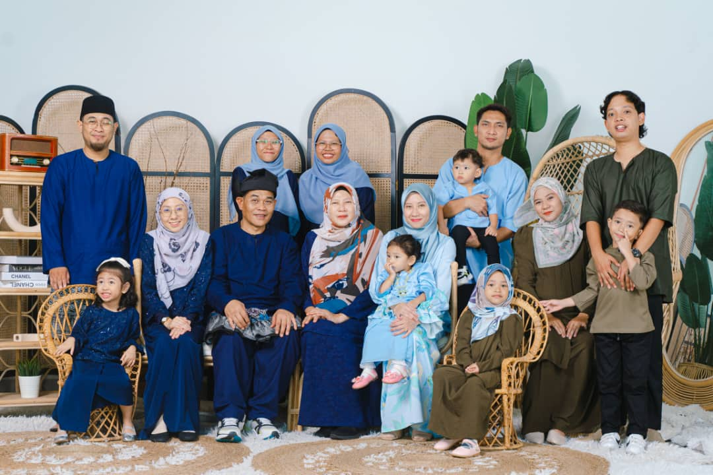
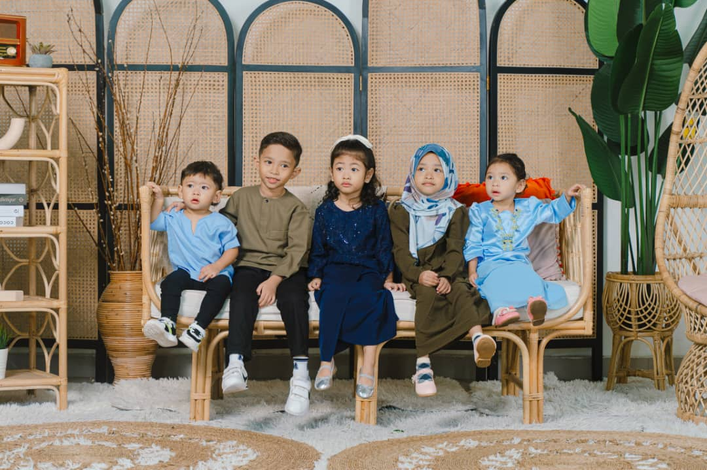
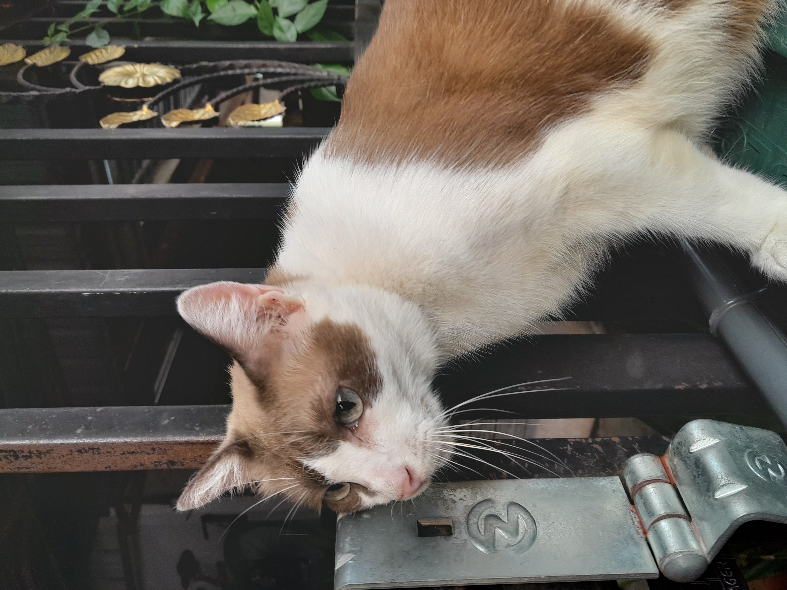
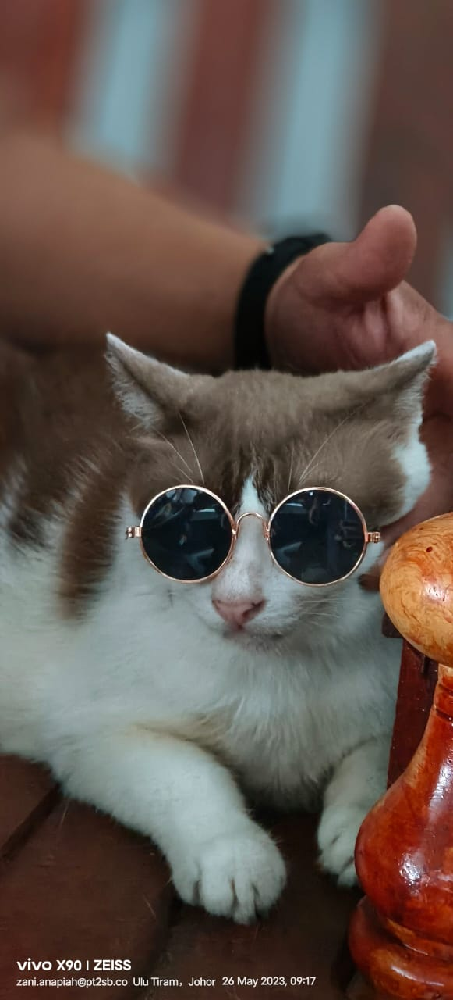

<!DOCTYPE html>
<html>
<title> about </title>
</html>
<style>
    body {
      background-image: url('w2.png');
      background-repeat: no-repeat;
      background-attachment: fixed;
      background-size: cover;
    }
    </style>

<!DOCTYPE html>
<html>
<meta name="viewport" content="width=device-width, initial-scale=1">
<link rel="stylesheet" href="https://cdnjs.cloudflare.com/ajax/libs/font-awesome/4.7.0/css/font-awesome.min.css">
<style>
body {margin:0;}

.icon-bar {
  width: 100%;
  background-color: #d38d574d;
  overflow: auto;
}

.icon-bar a {
  float: left;
  width: 20%;
  text-align: center;
  padding: 12px 0;
  transition: all 0.3s ease;
  color: white;
  font-size: 36px;
}

.icon-bar a:hover {
  background-color: #d38d574d;
}

</style>
<body>

<div class="icon-bar">
  <a href="index.html"><i class="fa fa-home"></i></a> 
  <a href="contact.html"><i class="fa fa-phone"></i></a>
</div>

</body>
</html>

<body text="black"</body>

<center>
    <video width="400" controls>
    <source src="song1.mp4" type="video/mp4">       
</video>
</center>

<html>
<head>
<style>
h1 {
  font-size: 40px;
  font-family: Georgia, 'Times New Roman', Times, serif;
}

h2 {
  font-size: 30px;
  font-family: 'Courier New', Courier, monospace;
}

p {
  font-size: 18px;
  font-family: 'Times New Roman', Times, serif;
}
</style>
</head>
</html>

<center><p><h1>♡ ABOUT ♡</h1></p></center>
<center><p><h2>♡ ME ♡</h2></p></center>

<center>
        

<p>My name is <i><b>Siti Aina Qistina Binti Kamizon.</b></i> I am 21 years old and was born on 1st November 2004 at Hospital Sultanah Aminah, Johor.</p> 
<p>I live in Johor Bahru and currently studying at Universiti Teknologi Mara Cawangan Johor Kampus Segamat in major Information Management.</p>
<p>Two fun facts about me is that I really love durian and singing is one of the things that could make me in a good mood.</p>
<p>Other than that, when I was a little girl, I could not decide what I wanted to be because I thought I had to choose one either teacher or photographer or pianist.</p>
<p>But as I grow older, I realized that I can be a little bit of everything. I pursue teaching, as part time I can take pictures but when I am bored I can play piano.</p>
<p>In the end, there is nothing wrong for you to have a million dreams when it makes you keep awake.</P>
<p><sup>So <i>'do more of what makes you happy, dreams big, and follow what hearts tell you'.</sup></i></p>

<br>

<center><p><h2>♡ MY FAMILY ♡</h2></p>

<center>
        

<p>This is my family that I love so much &#128536</p> 
<p>I have an amazing parents which is <i><b>Mrs. Norasikin and Mr. Zani.</b></i></p>
<p>Next, I have 4 beautiful older sisters which is <i><b>Miss Zunnur, Mrs. Syahirah, Mrs. Insyirah and Mrs. Syazwani.</b></i></p>
<p>Other than that, I have 3 joyful brothers in laws which is <i><b>Mr. Muhaimin, Mr. Aizat and Mr. Saifiq.</b></i></p>
<p>Moreover, I have 6 extraordinary nieces and nephews which is <i><b>Saif, Zea, Mysha, Arina, Ariq and Zahra.</b></i></p>
<p>They are the ones that make me a better person, daughter, sister, and aunty that you see it today. I am very grateful to have them in my life through up and down.</p>

<br>

<center><p><h2>♡ MY PET ♡</h2></p>

<center>
        

<p>This is my one and only cat &#128008</p> 
<p>We used to have 12 cats but at the end we could only keep one.</p>
<p>So, this is her. We called it <i><b>Popi</b></i> and her age is more than 80 years old.</p>
<p>She is our little guardian that takes care of our mom and dad.</p>
<p>A cute fact about her is that she loves to follow my mom everywhere around the neighbourhood and is scared of vacuum but loves rain.</p>

<br>

<center><p><i>&copy Aina Kamizon 2025</i></p></center>